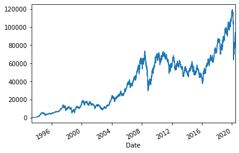
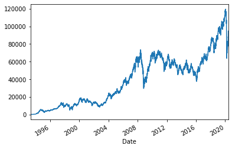

Python 3.7.4 (default, Aug 9 2019, 18:34:13) [MSC v.1915 64 bit (AMD64)]
Type "copyright", "credits" or "license" for more information.
IPython 7.8.0 -- An enhanced Interactive Python.
In [1]: import pandas as pd
...: import numpy as np
...: import matplotlib.pyplot as plt
...: import pandas_datareader.data as web
Traceback (most recent call last):
File "<ipython-input-1-62a63b2bbeb8>", line 4, in <module>
import pandas_datareader.data as web
ModuleNotFoundError: No module named 'pandas_datareader'
In [2]:
In [2]: import pandas as pd
...: import numpy as np
...: import matplotlib.pyplot as plt
In [3]: import pandas_datareader.data as web
Traceback (most recent call last):
File "<ipython-input-3-bc32bb8bec34>", line 1, in <module>
import pandas_datareader.data as web
ModuleNotFoundError: No module named 'pandas_datareader'
In [4]:
In [4]: !pip install pandas_datareader
Collecting pandas_datareader
Downloading https://files.pythonhosted.org/packages/14/52/accb990baebe0063977f26e02df36aa7eb4015ed4e86f828cd76273cd6f1/pandas_datareader-0.8.1-py2.py3-none-any.whl (107kB)
Requirement already satisfied: lxml in c:\users\kioolz\anaconda3\lib\site-packages (from pandas_datareader) (4.4.1)
Requirement already satisfied: requests>=2.3.0 in c:\users\kioolz\anaconda3\lib\site-packages (from pandas_datareader) (2.22.0)
Requirement already satisfied: pandas>=0.21 in c:\users\kioolz\anaconda3\lib\site-packages (from pandas_datareader) (0.25.1)
Requirement already satisfied: idna<2.9,>=2.5 in c:\users\kioolz\anaconda3\lib\site-packages (from requests>=2.3.0->pandas_datareader) (2.8)
Requirement already satisfied: chardet<3.1.0,>=3.0.2 in c:\users\kioolz\anaconda3\lib\site-packages (from requests>=2.3.0->pandas_datareader) (3.0.4)
Requirement already satisfied: urllib3!=1.25.0,!=1.25.1,<1.26,>=1.21.1 in c:\users\kioolz\anaconda3\lib\site-packages (from requests>=2.3.0->pandas_datareader) (1.24.2)
Requirement already satisfied: certifi>=2017.4.17 in c:\users\kioolz\anaconda3\lib\site-packages (from requests>=2.3.0->pandas_datareader) (2019.9.11)
Requirement already satisfied: pytz>=2017.2 in c:\users\kioolz\anaconda3\lib\site-packages (from pandas>=0.21->pandas_datareader) (2019.3)
Requirement already satisfied: python-dateutil>=2.6.1 in c:\users\kioolz\anaconda3\lib\site-packages (from pandas>=0.21->pandas_datareader) (2.8.0)
Requirement already satisfied: numpy>=1.13.3 in c:\users\kioolz\anaconda3\lib\site-packages (from pandas>=0.21->pandas_datareader) (1.16.5)
Requirement already satisfied: six>=1.5 in c:\users\kioolz\anaconda3\lib\site-packages (from python-dateutil>=2.6.1->pandas>=0.21->pandas_datareader) (1.12.0)
Installing collected packages: pandas-datareader
Successfully installed pandas-datareader-0.8.1
In [5]: import pandas_datareader.data as web
In [6]: !pip install yfinance --upgrade --no-cache-dir
Requirement already up-to-date: yfinance in c:\users\kioolz\anaconda3\lib\site-packages (0.1.54)
Requirement already satisfied, skipping upgrade: requests>=2.20 in c:\users\kioolz\anaconda3\lib\site-packages (from yfinance) (2.22.0)
Requirement already satisfied, skipping upgrade: numpy>=1.15 in c:\users\kioolz\anaconda3\lib\site-packages (from yfinance) (1.16.5)
Requirement already satisfied, skipping upgrade: pandas>=0.24 in c:\users\kioolz\anaconda3\lib\site-packages (from yfinance) (0.25.1)
Requirement already satisfied, skipping upgrade: multitasking>=0.0.7 in c:\users\kioolz\anaconda3\lib\site-packages (from yfinance) (0.0.9)
Requirement already satisfied, skipping upgrade: urllib3!=1.25.0,!=1.25.1,<1.26,>=1.21.1 in c:\users\kioolz\anaconda3\lib\site-packages (from requests>=2.20->yfinance) (1.24.2)
Requirement already satisfied, skipping upgrade: idna<2.9,>=2.5 in c:\users\kioolz\anaconda3\lib\site-packages (from requests>=2.20->yfinance) (2.8)
Requirement already satisfied, skipping upgrade: certifi>=2017.4.17 in c:\users\kioolz\anaconda3\lib\site-packages (from requests>=2.20->yfinance) (2019.9.11)
Requirement already satisfied, skipping upgrade: chardet<3.1.0,>=3.0.2 in c:\users\kioolz\anaconda3\lib\site-packages (from requests>=2.20->yfinance) (3.0.4)
Requirement already satisfied, skipping upgrade: pytz>=2017.2 in c:\users\kioolz\anaconda3\lib\site-packages (from pandas>=0.24->yfinance) (2019.3)
Requirement already satisfied, skipping upgrade: python-dateutil>=2.6.1 in c:\users\kioolz\anaconda3\lib\site-packages (from pandas>=0.24->yfinance) (2.8.0)
Requirement already satisfied, skipping upgrade: six>=1.5 in c:\users\kioolz\anaconda3\lib\site-packages (from python-dateutil>=2.6.1->pandas>=0.24->yfinance) (1.12.0)
In [7]: import yfinance as yf
In [8]: yf.pdr_override()
In [9]: import pandas as pd
...: import numpy as np
...: import matplotlib.pyplot as plt
...: import pandas_datareader.data as web
In [10]: !pip install yfinance --upgrade --no-cache-dir
Requirement already up-to-date: yfinance in c:\users\kioolz\anaconda3\lib\site-packages (0.1.54)
Requirement already satisfied, skipping upgrade: multitasking>=0.0.7 in c:\users\kioolz\anaconda3\lib\site-packages (from yfinance) (0.0.9)
Requirement already satisfied, skipping upgrade: numpy>=1.15 in c:\users\kioolz\anaconda3\lib\site-packages (from yfinance) (1.16.5)
Requirement already satisfied, skipping upgrade: requests>=2.20 in c:\users\kioolz\anaconda3\lib\site-packages (from yfinance) (2.22.0)
Requirement already satisfied, skipping upgrade: pandas>=0.24 in c:\users\kioolz\anaconda3\lib\site-packages (from yfinance) (0.25.1)
Requirement already satisfied, skipping upgrade: certifi>=2017.4.17 in c:\users\kioolz\anaconda3\lib\site-packages (from requests>=2.20->yfinance) (2019.9.11)
Requirement already satisfied, skipping upgrade: idna<2.9,>=2.5 in c:\users\kioolz\anaconda3\lib\site-packages (from requests>=2.20->yfinance) (2.8)
Requirement already satisfied, skipping upgrade: urllib3!=1.25.0,!=1.25.1,<1.26,>=1.21.1 in c:\users\kioolz\anaconda3\lib\site-packages (from requests>=2.20->yfinance) (1.24.2)
Requirement already satisfied, skipping upgrade: chardet<3.1.0,>=3.0.2 in c:\users\kioolz\anaconda3\lib\site-packages (from requests>=2.20->yfinance) (3.0.4)
Requirement already satisfied, skipping upgrade: python-dateutil>=2.6.1 in c:\users\kioolz\anaconda3\lib\site-packages (from pandas>=0.24->yfinance) (2.8.0)
Requirement already satisfied, skipping upgrade: pytz>=2017.2 in c:\users\kioolz\anaconda3\lib\site-packages (from pandas>=0.24->yfinance) (2019.3)
Requirement already satisfied, skipping upgrade: six>=1.5 in c:\users\kioolz\anaconda3\lib\site-packages (from python-dateutil>=2.6.1->pandas>=0.24->yfinance) (1.12.0)
In [11]: import yfinance as yf
In [12]: yf.pdr_override()
In [13]: ibov = web.get_data_yahoo('^BVSP')
[*********************100%***********************] 1 of 1 completed
In [14]: ibov.head()
Out[14]:
Open High Low Close Adj Close Volume
Date
1993-04-27 24.799999 25.400000 24.500000 24.500000 24.500000 0
1993-04-28 24.500000 24.600000 23.700001 24.299999 24.299999 0
1993-04-29 24.299999 24.799999 23.700001 23.700001 23.700001 0
1993-04-30 23.700001 24.200001 23.700001 24.100000 24.100000 0
1993-05-03 24.100000 24.400000 23.799999 24.100000 24.100000 0
In [15]: ibov.tail()
Out[15]:
Open High Low Close Adj Close Volume
Date
2020-06-01 87395.0 89019.0 86837.0 88620.0 88620.0 9849400
2020-06-02 88622.0 91046.0 88622.0 91046.0 91046.0 11827300
2020-06-03 91048.0 93710.0 91048.0 93002.0 93002.0 15137900
2020-06-04 92993.0 94132.0 92221.0 93829.0 93829.0 11488000
2020-06-05 93839.0 97356.0 93839.0 94637.0 94637.0 13320300
In [16]: ibov["Close"].plot(fig(size(22,8))
File "<ipython-input-16-a4632b2b00aa>", line 1
ibov["Close"].plot(fig(size(22,8))
^
SyntaxError: unexpected EOF while parsing
In [17]:
In [17]: ibov["Close"].plot(figsize(22,8))
Traceback (most recent call last):
File "<ipython-input-17-0260c8559bc0>", line 1, in <module>
ibov["Close"].plot(figsize(22,8))
NameError: name 'figsize' is not defined
In [18]:
In [18]: ibov["Close"].plot
Out[18]: <pandas.plotting._core.PlotAccessor object at 0x0000022A81CAB7C8>
In [19]: ibov = web.get_data_yahoo('^BVSP')
[*********************100%***********************] 1 of 1 completed
In [20]: ibov.tail()
Out[20]:
Open High Low Close Adj Close Volume
Date
2020-06-01 87395.0 89019.0 86837.0 88620.0 88620.0 9849400
2020-06-02 88622.0 91046.0 88622.0 91046.0 91046.0 11827300
2020-06-03 91048.0 93710.0 91048.0 93002.0 93002.0 15137900
2020-06-04 92993.0 94132.0 92221.0 93829.0 93829.0 11488000
2020-06-05 93839.0 97356.0 93839.0 94637.0 94637.0 13320300
In [21]: ibov.head()
Out[21]:
Open High Low Close Adj Close Volume
Date
1993-04-27 24.799999 25.400000 24.500000 24.500000 24.500000 0
1993-04-28 24.500000 24.600000 23.700001 24.299999 24.299999 0
1993-04-29 24.299999 24.799999 23.700001 23.700001 23.700001 0
1993-04-30 23.700001 24.200001 23.700001 24.100000 24.100000 0
1993-05-03 24.100000 24.400000 23.799999 24.100000 24.100000 0
In [22]: ibov["Close"].plot(figsize(22,8))
Traceback (most recent call last):
File "<ipython-input-22-0260c8559bc0>", line 1, in <module>
ibov["Close"].plot(figsize(22,8))
NameError: name 'figsize' is not defined
In [23]:
In [23]: ibov["Close"].plot(size(22,8))
Traceback (most recent call last):
File "<ipython-input-23-3ae9b8b5edbb>", line 1, in <module>
ibov["Close"].plot(size(22,8))
NameError: name 'size' is not defined
In [24]:
In [24]: ibov["Close"].plot()
Out[24]: <matplotlib.axes._subplots.AxesSubplot at 0x22a81cc1d08>
In [25]: ibov["Open"].plot()
Out[25]: <matplotlib.axes._subplots.AxesSubplot at 0x22a81bae748>

In [26]: ibov["Close"].plot(figsize(22,8))
Traceback (most recent call last):
File "<ipython-input-26-0260c8559bc0>", line 1, in <module>
ibov["Close"].plot(figsize(22,8))
NameError: name 'figsize' is not defined
In [27]:
In [27]: ibov["Close"].plot(label = "IBOV")
Out[27]: <matplotlib.axes._subplots.AxesSubplot at 0x22a81db6548>

In [28]: ibov["Close"].plot(label = "IBOV")
Out[28]: <matplotlib.axes._subplots.AxesSubplot at 0x22a81e6f808>
In [29]: